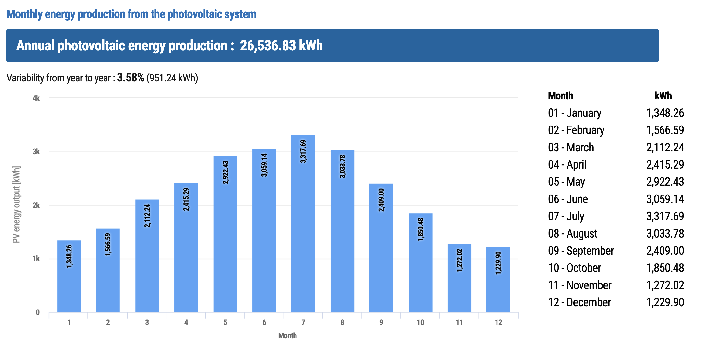
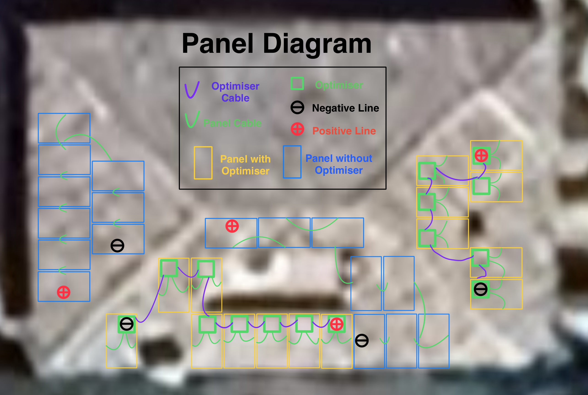
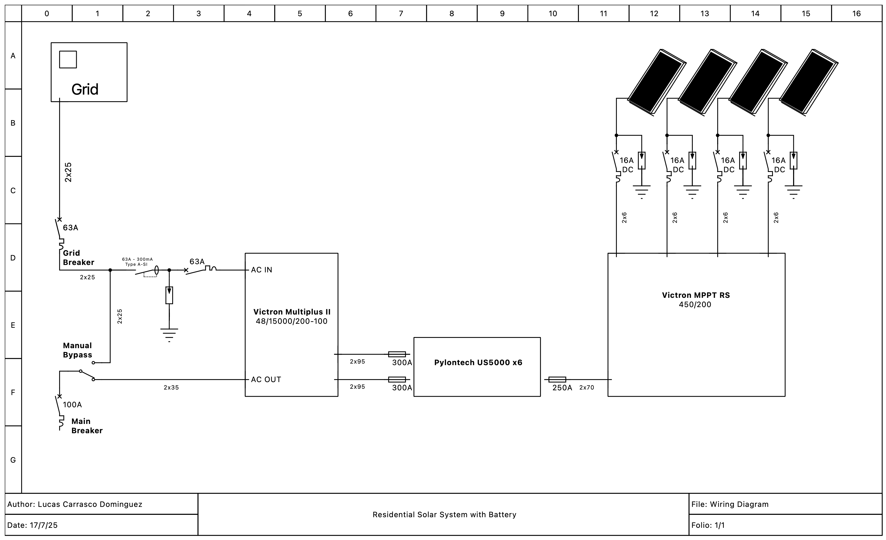
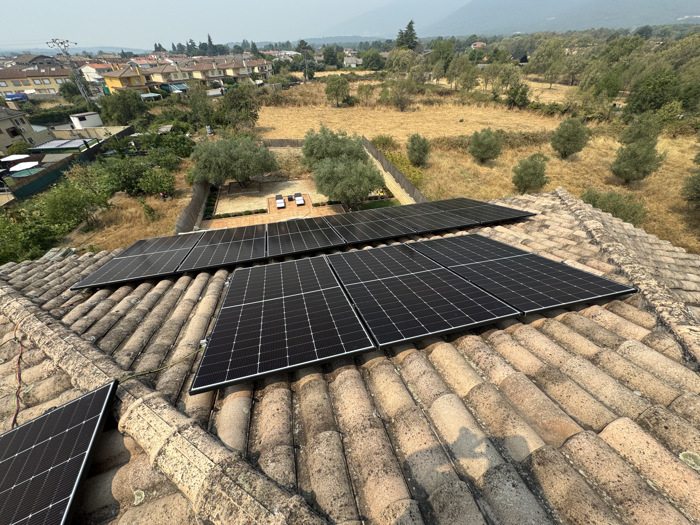
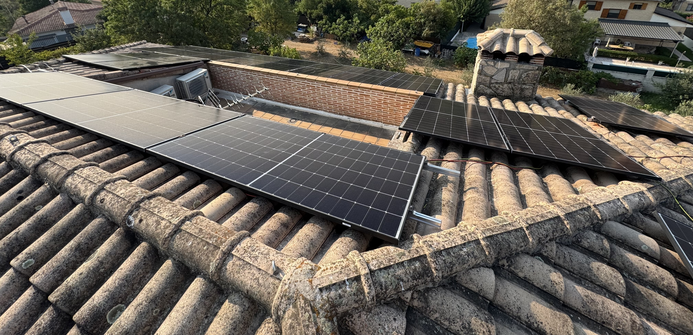
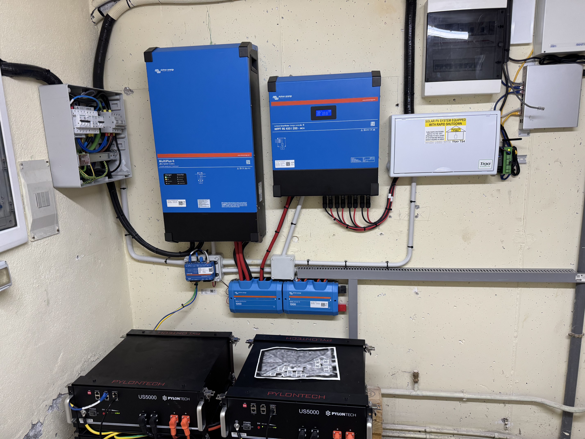
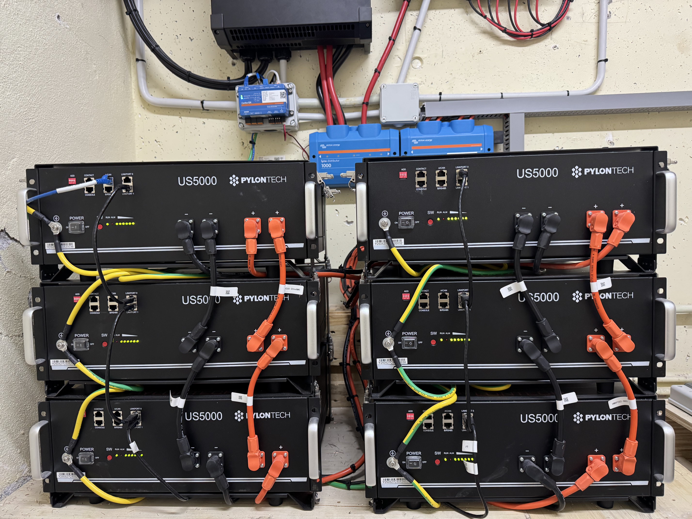
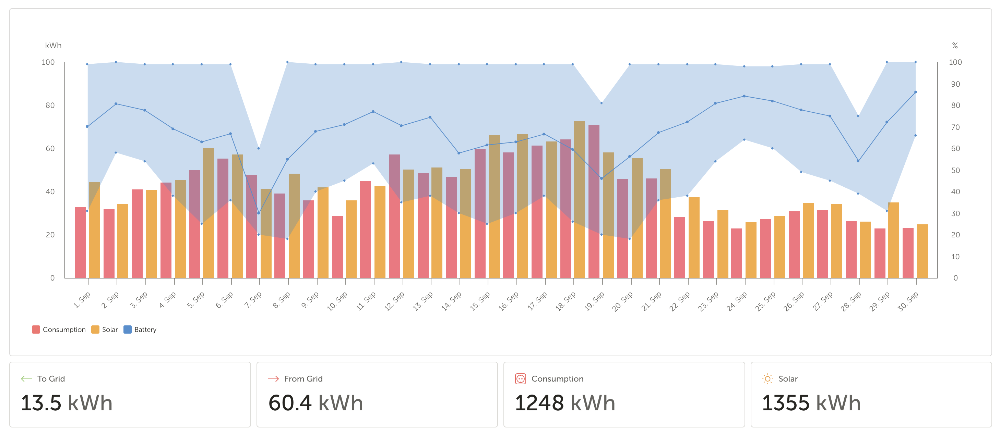
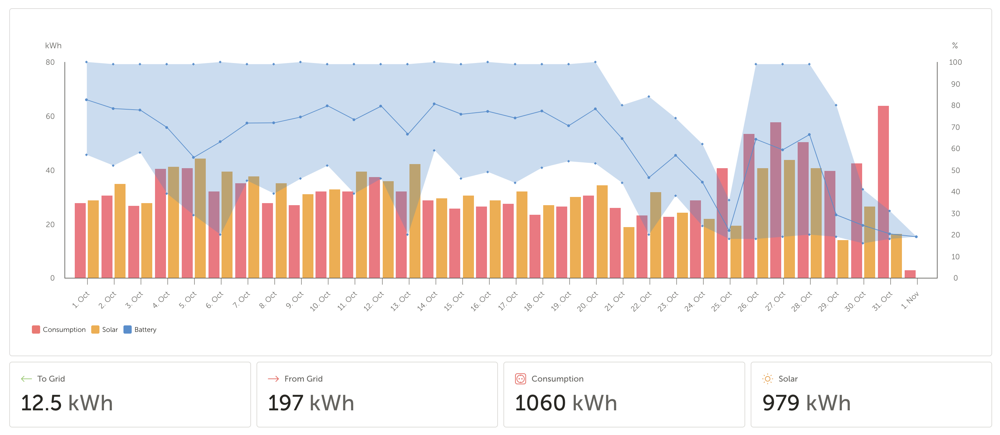

17 kWp Residential Solar With Battery & Backup
2025 • Energy systems, PV design, Victron ESS, Storage
Summary
This project consists of the complete design and deployment of a 17 kWp residential solar energy system integrating multi-orientation PV arrays, a 15 kVA inverter, and 28.8 kWh of lithium storage. The system was engineered to improve reliability during frequent grid outages, reduce annual energy costs, and maximise self-consumption through thermal load shifting and real-time energy management. It includes full PV modelling (PVGIS), electrical sizing, string design, shading mitigation, inverter and battery integration, and system-level optimisation for long-term efficiency and resilience.
Motivation
This engineering project involved the full design and implementation of a residential-scale solar energy system with the following objectives:
- Reduce grid dependency.
- Mitigate frequent power outages, which had previously caused appliance failures.
- Decrease annual electricity costs, historically around €4,500 per year.
Requirements
Power Needs
- An energy demand of ≈3,000 kWh per month during summer and winter.
- An energy demand of ≈1,000 kWh per month during autumn and spring.
- A historical peak power demand of 11.62 kW, according to the utility meter.
Location Characteristics
- Roof capacity for 32 panels (2×1 m), using the West, South and East slopes.
- Two rooftop chimneys, causing shading that must be mitigated.
- The main electrical panel is located in the basement.
Additional Considerations
The building is equipped with a central heating and cooling radiant floor heating system, powered by an air to water heat pump. This system has a strong buffering effect, which allows for heating and cooling scheduling in order to maximise solar utilisation. This reduces the amount of stored energy required overnight.
Design
Solar Plant Design
A total of 32 × JA Solar 530 W panels were installed, maximising the rooftop capacity. A previous yield estimate was performed using PVGIS, a free online solar tool developed by the European Joint Research Centre. The estimated production would cover the entirety of the property’s demand for seven months, from April to October, with approximately 10% surplus, which will make up for the degradation of the panels over time. The months from November to March would need support from the grid, with a coverage close to 50%.

The 32 panels are divided into four strings: West (9 panels), East (7 panels) and South (2×8 panels). These strings connect to a Victron MPPT RS 450/200 charge controller, which converts the PV voltage to the 48 V required by the battery. In addition, Tigo TS4 optimisers were added to two out of the four strings, to mitigate the power losses caused by chimney shading.

AC Conversion
A 15 kVA Victron Multiplus II inverter was selected. The unit surpasses the peak demanded power of the house, with some margin for future load growth. This inverter uses an electromagnetic transformer, making it more robust compared to purely electronic models, and more tolerant towards current peaks and unstable grids, which is ideal for this use case. In addition, the Multiplus II equips an uninterrupted transfer system, which takes over the power needs of the house during an outage with a 20 ms transfer time, ensuring appliances remain powered. It also allows reserving a fixed percentage of the battery always charged in order to be ready for these events.

Battery Selection
The radiant heating system has a great buffering capacity; therefore, the cooling and heating of the house can be scheduled during solar production hours. As a result, battery sizing focuses on the consumption of non-HVAC loads. For the calculations, April was used as an illustrative month, as neither cooling nor heating are required. The demand is around 1,000 kWh, which corresponds to an average of 33.3 kWh per day. Using a conservative assumption, it is estimated that two thirds of the consumption occur when there is no solar production, which would require 22.2 kWh of storage.
Six Pylontech US5000 battery units were selected. This model is compatible with Victron equipment and BMS protocols, and six units provide 28.8 kWh of storage, offering around 20% more capacity than needed to make up for future cell degradation.
Install
The installation phase included the complete physical integration of the PV array, inverter, MPPT, battery modules and DC distribution system. All wiring, protection elements and mechanical mounting were performed following manufacturer specifications and electrical safety standards. This included rooftop mounting of the panels, routing of DC/AC cabling to the basement with the corresponding electrical protections, assembly of the 48 V DC bus, and final commissioning of the system.
Installation Gallery




Results
Two months after commissioning, the system has achieved near-100% demand coverage, in line with the expected performance derived from the PVGIS modelling and consumption analysis. The following graphs illustrate the production profile, daily load coverage and battery utilisation during this period.


What I Learned
- Coordinating PV, inverter, MPPT and battery design reinforced the need for a system-level engineering approach.
- Real installation constraints (cable routing, shading, voltage drop, thermal limits) had major implications on design choices and equipment selection.
- Working with high-current DC systems strengthened my understanding of protection design, safety margins and fault behaviour in practical settings.